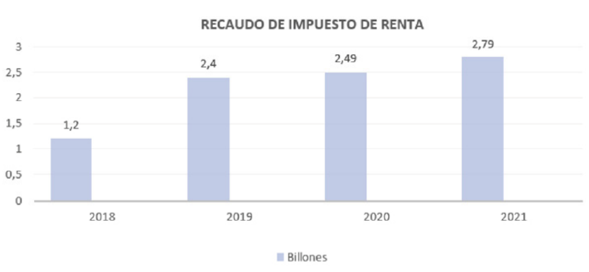

Introducción
Los impuestos o tributos tienen origen y
son antiguos como la creación del hombre
y de la humanidad, en el origen religioso es
el más antiguo donde las motivaciones del
hombre eran la necesidad de cumplirle a sus
dioses en base a su agradecimiento darles un
presente representado en sacrificios, como
claro ejemplo en la antigüedad de manera de
tributos es la ofrenda que hace las personas o
el pueblo en la parte sacerdotal, según (Torres
& Acevedo, 2016)
El tributo es representación de valor que
el estado o los gobiernos exigen como
consecuencia de ley para cubrir gastos y se
clasifican en “impuestos, tasas y contribuciones,
el impuesto es el tributo y su tipo son objetivos;
directos e indirectos; Impuestos nacionales,
departamentales y municipales, con tasa por
utilización de aguas, Peajes, Tasa aeroportuaria.
El derecho tributario son normas relacionada
a un estudio tributario” según (Torres Tovar,
2019).
El impuesto sobre la renta da lugar en 1797 en
Inglaterra, donde siempre se llamó impuesto
sobre la renta con el fin de recaudación de
fondos para Francia por su guerra. Pero no
porque las instituciones financieras británicas
que estaban vigentes en los primeros tiempos
en que aparecieron los impuestos fueran las
más adecuadas para liderar una reforma de
este tipo, sino por necesidad y sentido común
de la realidad. Estadistas británicos que
lograron imponer. En la Carta Magna, el origen
del impuesto sobre la renta se encuentra
como inicio en que la realeza que tenían tratos
con el rey y maltratar a la población, creían
que el rey se apropiaba de la mayor parte
de los productos. Los vasallos, dejándoles
cuotas mínimas, decidieron rebelarse, al
principio negándose a acompañar al rey en las
hostilidades, y luego se mostraron reacios a
pagar los nuevos impuestos necesarios para el costo de la guerra según (Fajardo Calderón &
Suárez Amaya, 2017).
En los países incluidos en Latinoamérica la
información analítica integral sobre dichos
establecen sus propias políticas de recaudación
de ingresos y se comprometen con el gasto
público y otras expectativas para satisfacer
necesidades sociales según (González, 2016)
El sistema tributario es fundamental porque
es a través de él que se recopilan y ponen a
disposición normas para que los contribuyentes
conozcan con precisión y claridad cuáles son
sus obligaciones y cómo deben contribuir
y declarar cada tipo de impuesto según
(Pastrana Castillo & Ramírez Cifuentes, 2020).
“El país con la tasa de impuestos más alta en
Latinoamérica es Argentina, que llega a 106%,
seguido de Bolivia, con 83,7%, y Colombia,
con 71,9% “ según (Montes, 2018) (Pastrana
Castillo & Ramírez Cifuentes, 2020) (Clavijo,
2020) (Espinosa Sepúlveda, 2014)
“La pandemia del covid-19 ha generado serios
problemas en materia económica y dificultades
de recaudo fiscal, ha provocado la peor crisis
económica en más de cien años en la historia
del país Colombiano” según Fedesarrollo,
(2021). “la región de Latinoamérica no ha sido
ajena a esta realidad, e incluso ha sido una
de las zonas más vulnerables a la recesión
económica” según Cabrera, (2021).
Este trabajo pretende analizar el
comportamiento del recaudo del impuesto de
renta para personas naturales en Colombia,
además de identificar las reformas tributarias
en Colombia adoptadas para el periodo
2018-2021, conocer o describir los marcos
normativos aplicables para contribuyentes del
impuesto de renta para el periodo 2018-2021
y describir el comportamiento del recaudo
para el periodo 2018-2021.
Fundamentación teórica
“Los impuestos en Colombia tienen su origen
en el artículo 95 bajo la constitución política
del 91” que obligue a todos los ciudadanos
a contribuir financiamiento de gastos e
inversiones estatales en el marco de conceptos
de justicia y honesto, Impuesto sobre la renta
para Colombia bajo el presidente Marco Fidel
Suárez promulgó la Ley N° 56 en 1918 para
incentivar las donaciones directamente de
personas físicas y jurídicas según (Ortega &
Mejia, 2017).
Según para (Cristina Bonilla, 2014) La tributaria
es como una cultura de los mecanismos a la
integralidad del sistema tributario en Colombia,
por lo que las empresas deben contar con
empleados acordes con la ética para procesar
adecuadamente la información contable, de
modo que se lleve a cabo al momento de
presentar las declaraciones de impuestos.
Existiendo sobre la base de las cantidades y
condiciones establecidas por la ley, La cultura
tributaria es uno de los pilares de la tributación
en Colombia y quienes se sumergen en ella
ahora dependen de un adecuado desarrollo y
pago adecuado de los impuestos.
Los ciudadanos son contribuyentes del Estado,
por eso es importante que sean conscientes
de todas las responsabilidades que se les
encomiendan como contribuyentesy llevar
sus estados financieros según (Garcia, 2018),
del origen de sus obligaciones tributarias y
de la importancia, donde que los impuestos
es la herramienta donde el gobierno recoge
ingresos y que estos subsidios a varios costos
funcionan bien gracias a estos recursos. El
gobierno también proporciona educación,
educación, salud, seguridad, bienes y servicios
públicos que la sociedad necesita, permitiendo
el crecimiento cultural, económico y social.,
según (Camacho et al., s.f.).
Según Llorente,Ramírez & Acosta ( 2017)“La
evasión fiscal es un indicador que afecta a todos
los países del mundo, pero más ampliamente
a los países emergentes debido a una variedad
de factores como la debilidad institucional, la
censura ”. La evasión fiscal es el incumplimiento
y la violación de la ley para evadir el pago
del sistema tributario y formulación de la
política fiscal del gobierno según (Escobar
et al., 2002).”La evasión fiscal ha sido y sigue
siendo un gran obstáculo fiscal para los países
de América Latina y el Caribe, Los países de
la región están avanzando en una serie de
Reformas y procedimientos administrativos
en materia tributaria enfocados a combatir la
evasión y elusión fiscal” según Morán,( 2020)
En Colombia, según Borja & Ortega,
(2020) “El monto de la evasión fiscal en
comparación con algunos países de América
Latina es aproximadamente el promedio
para el impuesto corporativo y el impuesto
al valor agregado, pero más alto para los
funcionarios del impuesto sobre la renta”
según González,(2016). “Impacto distributivo
del impuesto sobre la renta bajo en
comparación con otros países de la región:
existe una gran disparidad en los impuestos
corporativos entre industrias, tanto verticales
como horizontales” según González, (2016);
“Encontró una disminución en el impuesto al
valor agregado. Mejora la recaudación, reduce
el fraude, facilita el uso del sistema, mejora la
equidad e identifica reformas que indican la
necesidad de aumentar los impuestos directos
y reducir el detalle del impuesto sobre la renta
y las sociedades; Además de promover la
simplificación del sistema, eliminando varios
métodos de procesamiento” según (Concha
Llorente, Tomás - Ramírez Jaramillo, Juan
Carlos - Acosta, 2017) (Borja Borja & Ortega
Pereira, 2020)(SRI, 2017).
La evasión es un problema macroeconómico
que eventualmente se convierte en una
condición económica importante, lo que genera problemas graves como la
desigualdad social, el alto desempleo y
el lento crecimiento económico según
(Martinez Luna, 2020).La evasión de la renta
limita el crecimiento económico al reducir el
gasto público, porque no incluye el valor real
a pagar en el impuesto a la renta generado
según (Escobar et al., 2002) (Borja Borja &
Ortega Pereira, 2020)(Fedesarrollo, 2021)
(Ramos & Usaquén, 2019)
El sistemaa tributario en Colombia maneja
unos impuestos nacionales tales como es el “
(IVA) se aplica al consumo de bienes y servicios
que son gravados(19%) diferencial(5%),
exentos o excluidos(0%), los responsables
son los contribuyentes como los productores,
comercializadores y distribuidores que sean
del régimen común o simplificado y estén
obligados a declarar”(Muñoz Cárdenas,
2017)(Trigos & Hugo Marín Beltrán Amaya,
2021); El Impuesto a la Renta de las Personas
Naturales y Jurídicas es “un impuesto nacional
que se paga anualmente y se liquida en un
porcentaje determinado por la Dian sobre el
valor de las utilidades” según PÉREZ, (2021).
Este período se denomina período gravable.
“Es una declaración en la que se enumeran
todos sus ingresos, gastos, pasivos, activos
y, en resumen, todos su patrimonio” según
KPMG, (2018). Para las personas jurídicas
se establece el porcentaje de liquidación,
para este año 2020 corresponde al 32%,
31% para el 2021, 30% para el 2022 según
(PROCOLOMBIA, 2020), y para las personas
naturales esta deberá efectuarse a través
de un sistema de cronograma donde se
establezca la base gravable y se utilizan
tasas para las clasificaciones de ingresos
como trabajo, pensión, capital, no laborable,
dividendos y participación” (Fajardo Calderón
& Suárez Amaya, 2017)(Fedesarrollo,
2021);Según PROCOLOMBIA, (2020) “Rete
fuente es un mecanismo como anticipo
del impuesto a la renta correspondiente al sujeto pasivo y se paga antes de que se
vence su periodo gravable, existen unos
componentes que son el agente retenedor
y el sujeto pasivo” y cuando se presta un
bien y servicio la rete fuente utiliza una base
minima en UVT y se tiene que mirar la tabla
de tarifa para hacer la respectiva retencion;
Impoconsumo se aplica sobre algunos bienes
en base a unas tarifas como 4%, 8% y 16%
Los contribuyentes que vendan estos bienes
y servicios gravados deberán declarar cada
dos meses según Pastrana Castillo & Ramírez
Cifuentes, (2020); “Impuesto al patrimonio se
debe pagar por los años 2019, 2020 y 2021
Aplicable a personas naturales y algunas
sociedades extranjeras”Garcia, (2018), son
contribuyentes todas las “personas naturales,
sucesiones ilíquidas, contribuyentes del
impuesto sobre la renta y complementarios”
según Garcia,( 2018). Este impuesto debe
pagarse con las condiciones dadas en el
Estatuto Tributario en el artículo 294-2 según
Fedesarrollo, (2021);”Impuesto a la Gasolina
y ACPM; Gravamen a los movimientos
financieros (GMF) 4X1000; Impuesto al
timbre nacional” segun (Pastrana Castillo &
Ramírez Cifuentes, 2020)(Muñoz Cárdenas,
2017)(Muñoz Cárdenas, 2018).
Impuestos Departamentales en el sisteme
tributario colombiano: “Impuesto sobre el
consumo de cerveza, licores y cigarrillos:
Este impuesto se creó con el objetivo de
debilitar el consumo y se dificulta un enorme
problema de contrabando (Evasion) según
Martinez Luna, (2020). Los recargos por
gasolina son aportes de las dependencias
y municipios, resultantes del consumo
adicional y corriente, nacional o importado,
de gasolina; Impuesto a los vehículos” según
Pastrana Castillo & Ramírez Cifuentes, (2020)
Impuestos Municipales en el sistema
tributario colombiano: “ICA, Impuesto Predial
unificado; Impuesto de delineación urbana; Impuesto de azar y espectáculos” según
(Pastrana Castillo & Ramírez Cifuentes, 82020)
“El impuesto sobre la renta en Colombia fue
creado por la Ley 56 de 1918, sin embargo,
se aplicó solo hasta 1922”, y ha sido un
pilar del sistema tributario durante los
100 años de historia de Colombia según
(Méndez Cárdenas, 2017). “En Colombia,
las leyes tributarias regulan los impuestos
nacionales y regionales. Los primeros son
los administrados por el estado e incluyen el
impuesto sobre la renta, el impuesto al valor
agregado, impoconsumo y a la propiedad”.
Están sujetos a este impuesto las personas
naturales o jurídicas que realicen el hecho
que lo creó, es decir, quienes generen rentas
con posibilidad de aumentar el patrimonio
según (Melissa et al., s.f.)
Durante los últimos veinte años en
Colombia, los gobiernos presidenciales
han implementado sucesivas reformas
tributarias como parte de una estrategia para
aumentar los ingresos fiscales y reducir el
déficit presupuestario. Según En Colombia,
tradicionalmente, al realizar la reforma
tributaria también se señala como necesidad
el incentivo de la inversión y el crecimiento
económico, según (Castañeda Rodríguez
et al., 2020). “Este fenómeno surgió en la
década de 1990 durante la apertura de la
economía, debido a la aversión a la actividad
industrial y la recaudación de impuestos
luego de que se redujeron las exenciones
tributarias..”. La situación va empeorando
con el tiempo, porque además de reducir
los aranceles, también se aumentan los
impuestos indirectos, se otorgan beneficios
fiscales a los grandes capitalistas y a los
verdaderos economistas o el área se está
debilitando o Perdió su viabilidad financiera.
Según (Clavijo, 2020) La reforma tributaria
de los últimos años tiene como objetivo aumentar los ingresos tributarios y puede
afectar positivamente los compromisos.
En palabras del presidente Iván Duque
Márquez, la reciente reforma tributaria
presentada por el gobierno nacional a la
Asamblea Nacional de la República tiene
como objetivo estabilizar la economía
colombiana; El caso es que dado el impacto
potencial de la reforma tributaria propuesta
por el gobierno nacional, es obvio aumentar
algunos impuestos a los colombianos, como
la declaración de la renta, por otro lado, el
gobierno propuesto protege, mencionando
aspectos como los riesgos potenciales que
Colombia enfrentará una deuda internacional
costosa, una posible depreciación del peso y
obstáculos para financiar algunos programas
sociales existentes en Colombia según
(Alexandra Giraldo Gutiérrez Universidad
Santo Tomás Facultad Derecho, 2021).En
el año 2018 en el inicio de la presidencia
de Iván Duque, el país colombiano ha
confrontado 8 normas que son consideradas
reformas tributarias al estas hacer diversas
modificaciones al sistema fisco del país.
(Rocio Garzon Millan, 2017)
Política fiscal
“Las finanzas públicas tienen cuatro objetivos
principales. Establecer unas normas de
ingresos y gastos para la medida de bienes,
en post de la satisfacción de las necesidades
sociales. Los impuestos deben utilizarse para
la distribución de dinero”. Las finanzas públicas
tienen la función de estabilizar la economía,
contribuyendo a la implementación de
políticas para reducir la inflación o fomentar
el desarrollo de una economía de mercado.
“El desarrollo la economía en base al ahorro,
ayudando a reducir los desequilibrios en los
ciclos económicos, regulando la relación de
los factores de producción y ayudando a crear condiciones propicias para la justicia y
la equidad” según Cristina Bonilla, (2014).
Impuesto renta para personas naturales
En 1918, mediante la Ley 56, se establece
un impuesto sobre la renta en Colombia
según (Bolaños, 2020) desde la fecha se van
llevando a cabo diversas reformas tributarias.
La recaudación de impuestos está ligada a la
creación de recursos públicos. El impuesto
“identifica la obtención de ganancias por
parte de los contribuyentes que crean la vida
económica en el país. El nivel de recaudación
es un indicador del nivel de prosperidad”. Y
dicho impuesto no es la principal fuente de
ingresos del país colombiano según (García,
2021).
Según (Torres Tovar, 2019) En virtud de la
Ley de Reforma Tributaria 1819 de 2016,
“se impone a las personas naturales la
obligación de pagar el impuesto sobre
la renta, impuesto que antes gravaba a
las personas jurídicas con determinadas
condiciones y con un determinado capital
acumulado.”, según Cárdenas & MercerBlackman, (2006) “El impuesto de renta y
el IVA son los que más hacen contribución
al recaudo total, los contribuyentes hacen
actividades para la incrementación de su
patrimonio, también comprende las remesas
y gravámenes”.Todas las personas que vivan
en Colombia Naturales están sujetas al
impuesto según (Cuesta & Jara, 2019).Una
buena planificación de gastos permite a los
contribuyentes mejorar su declaración, pagar
lo que es y con la normativa aplicable según
(Diaz Montenegro, 2015).
La carga tributaria de los impuestos directos
como renta tiene un efecto redistributivo,
por lo que desde la política tributaria se
deben aplicar los principios de equidad
y progreso a la hora de crear o ajustar un
impuesto, según su efecto según(Ventura Escacena, 2020). Ingresos, pero una mayor
parte del crecimiento de la economía nacional
según (Farfán-Rodríguez et al., 2019), Hay un
cambio de paradigma porque en principio se
clasifica a una persona según una regla fija,
pero en el orden final se vuelve al sistema
ordinal tradicional de clasificación por ingresos
según (Pinillos Villamizar, 2018), “las personas
naturales no tienen la capacidad contributiva
para asumir sus gastos y eso influye en la
recaudación del impuesto a la renta” según
Cabanillas Ñaño et al., (2020).
Materiales y métodos
Esta investigación es de tipo descriptivo y
explicativo, ya que se interpreta y se decodifica
las leyes y reglamentos que rigen el impuesto
sobre la renta, ya que el conocimiento a través
de principios, normas, conceptos, procesos y
procedimientos se ha utilizado para determinar
la obligación tributaria. Se utilizaron métodos
analíticos.
Reformas tributarias en Colombia
adoptadas para el periodo 2018-2021
Ley de financiamiento 1943 del 28 de
diciembre de 2018: “POR LA CUAL SE
EXPIDEN NORMAS DE FINANCIAMIENTO
PARA EL RESTABLECIMIENTO DEL
EQUILIBRIO DEL PRESUPUESTO GENERAL Y
SE DICTAN OTRAS DISPOSICIONES”
según KPMG, (2018) “Los cambios en los ingresos
personales, la eliminación de una ventaja del
25 % sobre los ingresos comerciales, como
los ingresos exentos de ingresos laborales, el
aumento de los impuestos sobre la renta y la
limitación de tarifas y deducciones, se limitarán
al 35 %”: ingreso componente e ingreso de
una persona física exenta “Los propietarios de
ingresos mensuales superiores a 25, 50 y 90
millones tasa 33% y primas 35%, 37% y 39%,
respectivamente. El impuesto de sociedades
se mantendrá en el 33% en 2019, pero irá
bajando progresivamente, en 2020 al 32%, en 2021 al 31% hasta llegar al 30% en 2022
cuando finalice el impuesto.”, según (Funcion
publica, 2018).“Esta Ley contrajo un recaudo
bastante progresivo en el impuesto de renta
de 1,9 billones de pesos para financiar el
presupuesto, resolver el desbalance fiscal a
un corto plazo”, según (DGPM, 2019)(Informe
de La Comisión de Expertos En Beneficios
Tributarios | Brigard Urrutia, 2020)
Ley de Crecimiento Económico 2010 27
de diciembre de 2019: “Reglas agregadas
para promover el crecimiento económico,
el empleo y las inversiones” Promover las
finanzas públicas, el progreso, la igualdad y
la eficiencia del sistema tributario para cada
uno de los objetivos de la Ley de 1943 de 2018
y demás normas.”(Funcion publica, 2019c)“
En la Ley de Crecimiento sigue vigente una
reducción gradual de las rentas, que será del
32% en 2020, del 31% en 2021 y del 30% en
2022.”. “También se aprobó el art. 84, que
redujo la renta presuntiva a 0,5% en el año
gravable 2020; y a 0 % a partir del año gravable
2021; y el 85, que establece la reducción en
renta para actividades de economía naranja”.
(Ley Nº 2010, 2019)(Funcion publica, 2019b)
(Cristina Bonilla, 2014)(Funcion publica, 2019a)
Ley de Inversión Social N° 2155 del 14 de
septiembre de 2021: “la cual se expide la Ley
de Inversión Social y demás reglamentos?
“ “Ajuste de la tarifa general del impuesto de renta en personas jurídica, donde recorta el
gasto público y autoriza diferentes subsidios
para la población. Establece para las empresas
una tarifa del 35% del Impuesto sobre la Renta
en 2022. Y a partir de ese año baja un 30%”.
Esto puede corresponder a cualquier negocio
con un ingreso total anual superior a 100.000
UVT y por lo tanto no es imputable al sistema
tributario simple. (algunas pequeñas y todas
las medianas y grandes empresas).(Funcion
publica, 2021)
Marco normativo de las reformas
tributarias, periodo 2018 - 2021
“Deberán presentar declaraciones de renta
para el año 2022 todas las personas naturales
que cumplan con las siguientes condiciones:
“Patrimonio total en 2021 igual o superior a
$163,386,000”; tener un ingreso total igual o
mayor a $5,083,1,000; Dicho uso de tarjeta de
crédito sea igual o superior a US$ 50.831.000;
Valor total de compra y depreciación igual o
mayor a $5,083,1,000; El valor total acumulado
de préstamos bancarios, depósitos o
inversiones financieras iguales o superiores a
$50,831,000”.
Comportamiento del recaudo para el periodo 2018-2021

Figura 1. Recaudo de Impuesto de Renta
La DIAN “Dirección de Impuesto y Aduanas
Nacionales “ informo que el recaudo de
impuesto de renta para personas naturales
para el año gravable 2018 fue de 1,2 billones
según (DNP, 2019a), año gravable 2019 fue de
2,4 billones según (DGPM, 2019), año gravable
2020 2,49 billones según (DGPM, 2020) y año
gravable 2021 2,79 billones según (DGPM,
2021); en el periodo 2020 Con una caída de los
ingresos de las empresas y de los hogares por
efectos post pandemia y en el periodo 2021
segundo año de pandemia, el recaudo de
impuestos se incrementó Por ello, es necesario
resaltar la recaudación de impuestos que se
realiza en Colombia a finales de 2021, cuando
el país podrá destinar más de sus créditos
para enfrentar nuevamente la crisis provocada
por la epidemia, según la fuente (DNP, 2019c,
2019a), (DNP, 2019b)
Conclusiones
Las reformas Tributarias en los periodos 2018
-2021 bajo el gobierno de Iván Duque, se
utilizaron una serie de medidas de política
fiscal que claramente su objetivo va en el
gasto, la austeridad, la eficiencia del Estado,
el combate a la evasión fiscal, el crecimiento
de los ingresos y la sostenibilidad fiscal, como
el impuesto de renta es uno de los impuestos
con más recaudo y tiene un desempeño
significativo y es el impuesto en donde más
tiene reforma de tipo normativo y la evolución
ha sido favorable pese a las condiciones y a
la crisis económica por pandemia en dichos
periodos.
En el marco Normativo de la reforma tributaria
en los periodos 2018 – 2021 para el impuesto
de renta para personas naturales declarantes
el monto en el año 2022 según la Dian estipula
que su patrimonio bruto, ingresos totales,
movimientos financieros o compras y consumo
sean iguales o superiores a $50.831.000.
El comportamiento del recaudo del impuesto
de renta para personas naturales en los
periodos 2018 – 2021 en el gobierno de Iván
Duque ha sido favorable.
Referencias
- Giraldo Gutiérrez, A. (2021). La reforma tributaria
en Colombia. Universidad Santo Tomás
Facultad. https://repository.usta.edu.co/handle/11634/38004?show=full
- Bolaños, L. del C. (2020). El impuesto de
renta en Colombia: una mirada desde
el gasto tributario. Boletín Mexicano de
Derecho Comparado, 52 (155). https://www.scielo.org.mx/scielo.php?script=sci_arttext&pid=S0041-86332019000200721
- Borja Borja, F. M., & Ortega Pereira, J. R.
(2020). Factores que determinan la evasión
del impuesto a la renta: Una revisión de la
literatura. Interconectando Saberes, 9. https://doi.org/10.25009/is.v0i9.2636
- Cabanillas Ñaño, S. I., García Romero, W. H., &
Rodríguez Kong, M. P. (2020). CAPACIDAD
CONTRIBUTIVA DE LAS PERSONAS
NATURALES Y SU INFLUENCIA EN EL
IMPUESTO A LA RENTA, REGION LA
LIBERTAD, 2018.REVISTA CIENTIFICA
TZHOECOEN, 12(1), 80–90. https://doi.org/10.26495/TZH.V12I1.1247
- Cabrera, O. (2021). Principales medidas impositivas
en el Impuesto a la Renta y el Impuesto al
Valor Agregado derivadas de la emergencia
económica por el covid-19 en el Ecuador.
Revista de Derecho Fiscal, 18, 165-176. https://revistas.uexternado.edu.co/index.php/fiscal/article/view/6978
- Cárdenas, M., & Mercer-Blackman, V. (2006).
Análisis del sistema tributario colombiano
y su impacto sobre la competitividad. FEDESARROLLO https://www.repository.fedesarrollo.org.co/handle/11445/1915
- Castañeda Rodríguez, V. M., Villabona-Robayo,
J. O., Castañeda Rodríguez, V. M., &
Villabona, J. O. (2020,). El impuesto sobre
la renta empresarial en Colombia: su tasa
efectiva y su relación con la inversión. Apuntes
Del Cenes, 39(70), 183–205. https://doi.org/10.19053/01203053.v39.n70.2020.10493
- Clavijo, S. (2020). Propuesta de Reforma Tributaria
para Colombia (2021-2022).Universidad de
los Andes, Facultad de Economía http://hdl.handle.net/1992/46661
- Concha Llorente, T., Ramírez Jaramillo, J. C., &
Acosta, O. L., (2017). Tributación en Colombia:
reformas, evasión y equidad.CEPAL. https://www.cepal.org/es/publicaciones/43133-tributacion-colombia-reformas-evasionequidad-notas-estudio
- Cristina Bonilla. (2014). Vista de La cultura
tributaria como herramienta de política
fiscal: la experiencia de Bogotá. Revista
ciudades, estados y política 1 (1) 21-35 https://revistas.unal.edu.co/index.php/revcep/article/view/44456/45740
- Cuesta, M., & Jara, X. (2019). ¿Quién debe pagar
impuestos? Un análisis de microsimulación
para el impuesto a la renta de personas
naturales en el Ecuador. Revista Economía,
69(110). https://doi.org/10.29166/economia.v69i110.2040
- Ministerio de Hacienda y Crédito Público (2019).
MARCO FISCAL DE MEDIANO PLAZO2019.
https://www.minhacienda.gov.co/webcenter/ty?nodeId=%2FConexionContent%2FWCC_CLUSTER-111638%2F%2FidcPrimaryFile&revision=latestreleased
- Ministerio de Hacienda y Crédito Público. (2020). MARCO FISCAL DE MEDIANO PLAZO2020. https://www.minhacienda.gov.co/webcenter/rty?nodeId=%2FConexionContent%2FWCC_CLUSTER-135563%2F%2FidcPrimaryFile&revision=latestreleased
- Ministerio de Hacienda y Crédito Público (2021).
MARCO FISCAL DE MEDIANO PLAZO 2021.
https://www.minhacienda.gov.co/webcenter/rty?nodeId=%2FConexionContent%2FWCC_CLUSTER-165808%2F%2FidcPrimaryFile&revision=latestreleased
- Diaz Montenegro, J. (2015). IMPUESTO A LA
RENTA DE PERSONAS NATURALES.
CIENCIA UNEMI, 1(1) ,44-47. https://ojs.unemi.edu.ec/index.php/cienciaunemi/article/view/170
- DNP. (2019a). Balance de Resultados 2019 Plan
Nacional de Desarrollo 2018-2022. https://colaboracion.dnp.gov.co/CDT/Sinergia/Documentos/Balance_de_Resultados_2019_PND_2018_2022.pdf
- DNP. (2019b). Bases del Plan Nacional de
Desarrollo 2018-2022. https://www.dnp.gov.co/Plan-Nacional-de-Desarrollo/Paginas/Basesdel-Plan-Nacional-de-Desarrollo-2018-2022.aspx
- DNP. (2019c). Plan nacional de desarrollo (2018-
2022). https://www.dnp.gov.co/DNPN/Paginas/Plan-Nacional-de-Desarrollo.aspx
- Espinosa Sepúlveda, J. (2014). Los sistemas de
impuesto a la renta de América Latina y los
convenios de doble imposición vigentes. Revista
Derecho PUCP, (72). https://doi.org/10.18800/derechopucp.201401.009
- Fajardo Calderón, C. L., & Suárez Amaya, D.
C. (2017). ANÁLISIS COMPARATIVO
DEL IMPUESTO DE RENTA PARA LAS
PERSONAS NATURALES (COLOMBIA) - PERSONAS FÍSICAS (ESPAÑA) Y LOS
NO RESIDENTES. Criterio Libre, 10(17),
235-258. https://doi.org/10.18041/1900-0642/criteriolibre.17.1150
- Farfán-Rodríguez, J. C., Duque-Correa, M.,
Orrego-Cárdenas, M. del-S., & SossaUribe, S. M. (2019). Análisis de la carga
fiscal asociada al impuesto de renta sobre
asalariados en Colombia, 1989 a 2018.
Contaduría Universidad de Antioquia,
(74), 103-125. https://doi.org/10.17533/udea.rc.n74a05
- Fedesarrollo. (2021). REFORMAS PARA UNA
COLOMBIA POST-COVID-19: Hacia
un nuevo contrato social. Fedesarrollo.
https://www.fedesarrollo.org.co/es/content/reformas-para-una-colombia-post-covid-19-hacia-un-nuevo-contrato-social
- Funcion publica. (2018). Ley No 1943. (28 de
Diciembre). Gestor Normativo. https://cijuf.org.co/sites/cijuf.org.co/files/normatividad/2018/LEY1943DEL28DEDICIEMBREDE2018%281%29%281%29.pdf
- Función pública. (2019a). Decreto 2106 de
2019. Gestor Normativo. https://www.funcionpublica.gov.co/eva/gestornormativo/norma.php?i=103352
- Funcion publica. (2019b). Ley No 1955 DE
2019. Gestor Normativo. https://www.funcionpublica.gov.co/eva/gestornormativo/norma.php?i=93970
- Función pública. (2019c). Ley No 2010. Gestor
Normativo. https://www.funcionpublica.gov.co/eva/gestornormativo/norma.php?i=159687#:~:text
Se adoptan normas
para la,y se dictan otras disposiciones.
- Función pública. (2021). Ley No 2155.
Gestor Normativo. funcionpublica. gov.co/eva/gestornormativo/norma.
php?i=170902#:~:text=La presente ley tiene
por,como a contribuir a la
- Garcia, C. (2018). Estados Financieros Básicos
con Ejemplos para Pequeños Negocios. https://aofund.org/es/resource/estados-financieros/
- García, W. (2021). Recaudación del impuesto
sobre la renta y su impacto en el presupuesto
de la nación. Actualidad Contable FACES,
24 (43), 93-115. https://www.redalyc.org/journal/257/25769354005/html/
- González, D. (2016). Regímenes especiales de
tributación para pequeños contribuyentes en
América Latina. Banco Interamericano De
Desarrollo. https://publications.iadb.org/es/publicacion/13467/regimenes-especiales-detributacion-para-pequenos-contribuyentes-enamerica
- Brigard Urrutia (2020). Informe de la Comisión
de Expertos en Beneficios Tributarios. https://bu.com.co/es/noticias/informe-de-la-comisionde-expertos-en-beneficios-tributarios
- KPMG. (2018). Resumen Proyecto Ley de
Financiamiento. https://assets.kpmg/content/dam/kpmg/co/pdf/2018/11/ley-definanciamiento.pdf
- Martinez Luna, K. L. (2020). Evasión del
impuesto sobre la renta de personas naturales
en Colombia, causas y efectos. [Tesis de
Posgrado, Universidad Santo Tomás].
https://repository.usta.edu.co/bitstream/dle/11634/28274/2020karenmartinez?sequence
- Melissa, L., Achury, D., Darío, J., Plaza, C.,
Steven, A., & Yela, P. (s.f.). ANALISIS DE
LOS CAMBIOS DE LAS REFORMAS
TRIBUTARIAS DEL IMPUESTO SOBRE LA
RENTA PARA PERSONAS NATURALES Y
JURIDICAS EN COLOMBIA. 2012–2018.
- Méndez Cárdenas, A. (2017). Análisis sobre los
efectos de la tributación de dividendos en
el impuesto de renta de personas naturales
a partir de la reforma tributaria de la Ley
1819 de 2016. [Tesis Posgrado, Pontificia
Universidad Javeriana]. https://repository.javeriana.edu.co/handle/10554/41110#
- Montes, S. (2018). América del Sur es la región
del mundo donde los empresarios pagan
más impuestos. https://www.larepublica.co/globoeconomia/america-del-sur-es-la-regiondel-mundo-donde-los-empresarios-paganmas-impuestos-2798787
- Morán, J. C. G. S. D. (2020). Estrategias para
abordar la evasión tributaria en América
Latina y el Caribe: avances en su medición
y panorama de las medidas recientes para
reducir su magnitud. CEPAL www.cepal.org/apps
- Muñoz Cárdenas, M. I. (2017). Supuesta equidad
tributaria de los impuestos de renta, IVA e ICA
en Colombia (Supposed tax equity of income,
VAT and ICA taxes). Inclusión & Desarrollo,
5(1), 113-118. https://doi.org/10.26620/uniminuto.inclusion.5.1.2018.113-118
- Muñoz Cárdenas, M. I. (2018). Supuesta equidad
tributaria de los impuestos de renta, IVA e
ICA en Colombia. Inclusión & Desarrollo,
5(1) ,113-118. https://revistas.uniminuto.edu/index.php/IYD/article/view/1526
- Ortega, A. C., & Mejia, Y. campos. (2017). Impacto
de Impuesto de Renta y Complementarios
en Personas Naturales en Colombia, Según
las Tres Últimas Reformas Tributarias.
[Tesis de Posgrado, Universidad la gran
Colombia].Archivo Digital. https://repository.ugc.edu.co/bitstream/handle/11396/4681/Impacto_impuesto_renta_reformas.pdf?sequence=1&isAllowed=y
- Pastrana Castillo, L. P., & Ramírez Cifuentes, A. K. (2020). Panorama De Los Sistemas
Tributarios En América Latina: Colombia,
Perú, Chile, Brasil Y México. [Tesis de
Pregrado, Universidad de Cundinamarca]
https://repositorio.ucundinamarca.edu.co/handle/20.500.12558/3226
- Castro Arango, J.M., & González Parra,
O.L., (2021). Impuesto sobre la renta de las
personas naturales. In Comentarios a la
ley de Financiamiento. Ley 1943 de 2018.
Universidad del Externado. https://doi.org/10.2307/j.ctv1k03pvz.10
- Pinillos Villamizar, A. J. (2018). Cambio de
enfoque en la determinación del impuesto de
renta para personas naturales en Colombia a
partir de la Ley 1819 de 2016. Revista Espacios,
39(18). https://www.revistaespacios.com/a18v39n18/18391830.htm
- PROCOLOMBIA. (2022). Régimen Tributario
Colombiano. Guía 7. https://investincolombia.com.co/es/articulos-y-herramientas/herramientas/guia-legal-7-regimentributario-colombiano
- Ramos, J., & Usaquén, L. (2019). EVASIÓN
DE IMPUESTOS: RENTA E IVA EN
PERSONAS NATURALES. [Tesis de
Pregrado, Universidad Uniminuto de
Dios]. https://repository.uniminuto.edu/handle/10656/12362
- Garzon Millan, J.R (2017). Impacto que genera
el impuesto de la renta ordinaria en las
personas naturales en Colombia. [Tesis
de Pregrado, Universidad libre]. https://repository.unilibre.edu.co
- Torres Acevedo, A. M., (2016). Nociones
básicas de la Tributación en Colombia.
https://repository.ces.edu.co/bitstream/handle/10946/3098/19-Nociones%20b%C3%A1sicas%20de%20la%20Tributaci%C3%B3n%20en%20Colombia.pdf?sequence=1&isAllowed=y
- Torres Tovar, J. D. & Lara Sanabria, Y.D (2019).
El impuesto de renta en persona natural
y sus posibles efectos en la economía
doméstica de los araucanos. [Tesis de
Pregrado, Universidad Cooperativa de
Colombia] https://repository.ucc.edu.co/handle/20.500.12494/14504
- Trigos, S. D., Beltran Amaya, H.M & Galván
Argota, T.V., (2021).Análisis del sistema
tributario en Colombia vs México. [Tesis
de Pregrado, Universidad Cooperativa de
Colombia] https://repository.ucc.edu.co/handle/20.500.12494/34846
- Ventura Escacena, J. M. (2020). Fiscalidad del
ahorro mobiliario en el Impuesto sobre
la Renta de las Personas Físicas. [Tesis
de Doctorado, Universidad de Sevilla].
https://idus.us.es/handle/11441/99900#.YnxmetYxIcQ.mendeley